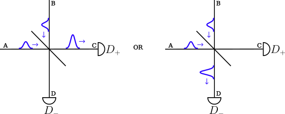

Interference on Beamsplitter
A beamsplitter is a partly reflective partly transmitive mirror that splits up an incomming photon as depicted here.

Asuming that the beamsplitter is equal (50% transmission and 50% reflection) and that we have only a single photon in one of waveguides impinging on the beamsplitter, the photon will go to detector plus 50% of the time and detector minus the other 50% of the time. This can be modeled in CavityWaveguide.jl using LazyTensorKet and Detector. We start by creating the two input waveguides.
Background Theory
Two photons inpinging on a beamsplitter is a classic example of destructive and constructive interference. If the two photons are indistinquishable, they will always appear in pairs on the other side of the beamsplitter. That is the following scenario:

However, what happens if the two photons have a slight mismatch in frequency or their temporal distribution and how do we model this? Assuming the beamsplitter is 50/50 the beamsplitter transformation is[1] : $w_a \rightarrow (w_c + w_d)/\sqrt(2)$ and $w_b \rightarrow (w_c - w_d)/\sqrt(2)$, where $w_k$ is the annihilation operator for waveguide $k={a,b,c,d}$. A one photon continous fockstate in waveguide a and b with wavefunction $\xi_a(t)$ and $\xi_b(t)$ has the combined state:
\[\begin{align*} \ket{\psi}_{a,b} &= \ket{\psi}_a \otimes \ket{\psi}_b = \int_{t_0}^{t_{end}} \mathrm{d}t \ \xi_a(t) w_a^\dagger(t) \ket{0}_a \otimes \int_{t_0}^{t_{end}} \mathrm{d}t \ \xi_b(t) w_b^\dagger(t) \ket{0}_b \\ & \int_{t_0}^{t_{end}} \mathrm{d}t \int_{t_0}^{t_{end}} \mathrm{d}t' \xi_a(t)\xi_b(t') w_a^\dagger(t) w_b^\dagger(t') \ket{0}_a\ket{0}_b \end{align*}\]
Using the beamsplitter transformation, we thus have the following state after the two photons have interfered on the beamsplitter:
\[\begin{align*} \ket{\psi}_{a,b} &\rightarrow[BS]{} \frac{1}{2} \int_{t_0}^{t_{end}} \mathrm{d}t \int_{t_0}^{t_{end}} \mathrm{d}t' \xi_a(t)\xi_b(t') (w_c^\dagger(t) + w_d^\dagger(t)) (w_c^\dagger(t') - w_d^\dagger(t')) \ket{0}_a\ket{0}_b \\ &= \frac{1}{2} \int_{t_0}^{t_{end}} \mathrm{d}t \int_{t_0}^{t_{end}} \mathrm{d}t' \xi_a(t)\xi_b(t') \left [ w_c^\dagger(t) w_c^\dagger(t') + w_d^\dagger(t)w_c^\dagger(t') - w_c^\dagger(t)w_d^\dagger(t') - w_d^\dagger(t)w_d^\dagger(t') \right ] \ket{0}_c\ket{0}_d \\ &= \frac{1}{2} \left ( W_c^\dagger(\xi_a) W_c^\dagger(\xi_b) \ket{0}_c - W_d^\dagger(\xi_a) W_d^\dagger(\xi_b) \ket{0}_d + \int_{t_0}^{t_{end}} \mathrm{d}t \int_{t_0}^{t_{end}} \mathrm{d}t' \left [ \xi_a(t)\xi_b(t') - \xi_a(t')\xi_b(t) \right] \ket{1}_c\ket{1}_d \right) \end{align*}\]
where we introduced $W_{c/d}^\dagger(\xi_a) W_{c/d}^\dagger(\xi_b) \ket{0}_{c/d} = int_{t_0}^{t_{end}} \mathrm{d}t \int_{t_0}^{t_{end}} \mathrm{d}t' \xi_a(t)\xi_b(t') w_{c/d}^\dagger(t) w_{c/d}^\dagger(t') \ket{0}_{c/d}$. $W_{c/d}^\dagger(\xi_a) W_{c/d}^\dagger(\xi_b) \ket{0}_{c/d}$ thus corresponds to both photons going into the same direction. It is also evident that if $\xi_a(t)\xi_b(t') - \xi_a(t')\xi_b(t) \right = 0$ then we will have no photons in waveguide c and d simultanously. This condition is exactly fulfilled if the photon in waveguide a is indistinquishable from the photon in waveguide b. This also means that if the photons ARE distinquishable, we will start to see photon occuring in waveguide c and d simultanously. All this and more can be simulated in the code and in the next section we walk through how to set the above example up in the code.
Beamsplitter and detection in CavityWaveguide.jl
In CaviyWaveguide.jl we create the two incoming photons in each of their respective waveguide: